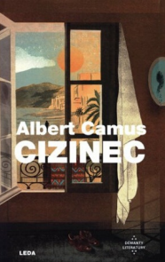
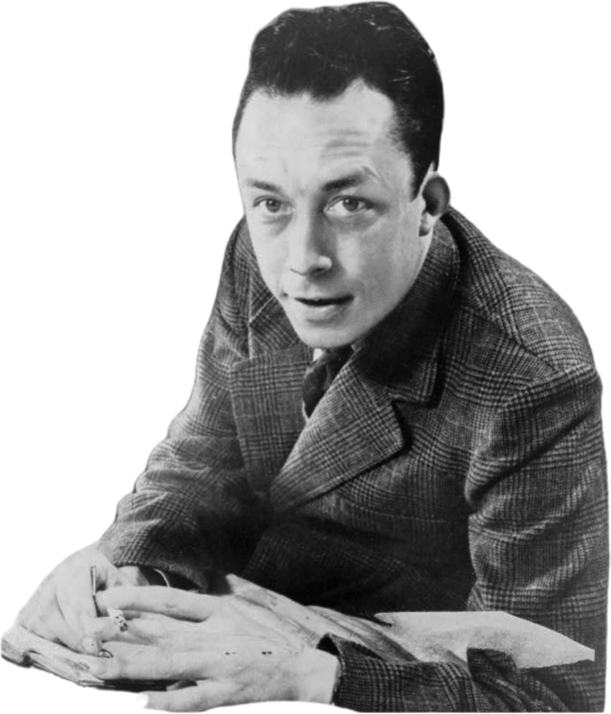

Cizinec – Albert Camus

Víte, jak vypadá kniha o někom, kdo prakticky vůbec nic necítí? Nemyslím někoho, kdo zabíjí psy pro zábavu, nebo někoho, kdo je schopen několik let týrat nezletilého, a ještě o tom lhát. Mám na mysli někoho, koho lze definovat pouze jedním slovem – apatie.
Cizinec od Alberta Camuse je filozofický román, vydaný roku 1942, a je považován za jedno z nejvýznamnějších děl pro filozofii existencionalismu. Sám Camus ho však spíše přiřazoval k absurdismu díky nesmyslnostem, které kniha surově ukazuje.
Příběh sleduje Meursaulta, úředníka v přepravní firmě, kterému jednoho dne zemře matka. Meursault si následně bere dovolenou a odjíždí na pohřeb své matky. Druhý den si jde zaplavat s dívkou, na kterou má zálusk, a o pár dní později se dostane do potyčky s jedním Arabem, kterého zabije. Druhá část knihy pak vypráví o Meursaultově soudním procesu a jeho finálním trestu. Děj knihy ovšem v Cizinci hraje spíše vedlejší roli. Mnohem větší důraz je kladen na osobu Meursaulta a na to, jak ho okolí vnímá. On se totiž na svět dívá poněkud lhostejně a flegmaticky zároveň. Dalo by se říct, že Meursault se neřídí nějakou vášní ani morálním přesvědčením, ale spíše prostou skutečností okamžiku, kterou přijímá bez odporu, a i bez snahy ji překročit. Často tak dělá věci jen, protože vyžadují menší úsilí než jiné.
Co je ovšem na Meursaultovi skutečně atypické, je jeho výrazná absence tradičních společenských emocí, soucitu či zájmu o hodnoty, které ostatní považují za důležité. Camus jeho osobnost definoval skvěle už hned v prvních pěti větách knihy: „Dnes mi umřela maminka. Nebo možná včera, nevím. Z hospicu mi přišel telegram: ‚Matka skonala. Pohřeb zítra. Hlubokou soustrast.‘“ Celý zbytek knihy se táhne v podobném duchu. Když se například Meursault s přáteli vydá na pláž a později zastřelí Araba, u výslechu pak vypoví, že to udělal proto, že bylo horko. Jeho soudní proces se nakonec vůbec nezabývá jeho vraždou, ale zabývá se ním. To je někým, kdo neplakal u pohřbu své matky, kdo zabije kvůli slunci, a komu je jedno, co se s ním nebo s kýmkoliv jiným stane. Zabývá se někým, kdo není jako ostatní.
Co se jazykové stránky týče, jedná se o filozofický román psaný prózou. Vyprávění je stylem „ich“ formy a dalo by se nazvat lyricko-epickým. Kniha je psaná tak, aby nehodnotila. Popisuje, co se děje kompletně bez emocí a předsudků. Meursault svůj příběh popisuje tak, jak ho vidí a jak o něm přemýšlí. Celá kniha totiž skvěle popisuje sama sebe skrz děj a zároveň popisuje děj sama sebou. Absurdní? Ano. Vystihující pro tuto knihu? Také ano.
Camusův Cizinec je dílo, které skvěle ukazuje, jak někdo, kdo není typický člen společnosti může být rychle odstrčen jen kvůli tomu, že je sám sebou. To, co Meursault udělá, nemá nakonec žádný význam, žádný dopad a ani žádný smysl. Jde o to, jaký je. Dílo opravdu skvěle ukazuje, co znamená absurdita a na konci vyvolá ve čtenáři takovou katarzi, že začne přemýšlet nad věcmi, u kterých se dřív ani nepozastavil.
Dle mého názoru je Cizinec dílo, které by si měl přečíst snad úplně každý. Ne nadarmo je totiž považováno za jedno z nejvýznamnějších děl francouzské literatury 20. století. Proto bylo i vybráno na první místo v žebříčku „100 Books of the Century časopisu Le Monde“. Je tedy vidět, že ve Francii má kniha velký kulturní význam a já věřím, že po přečtení každý, kdo pochopí její záměr, pochopí proč.

Článek zpracoval: Jáchym Polášek
Březen 2026ZDROJE